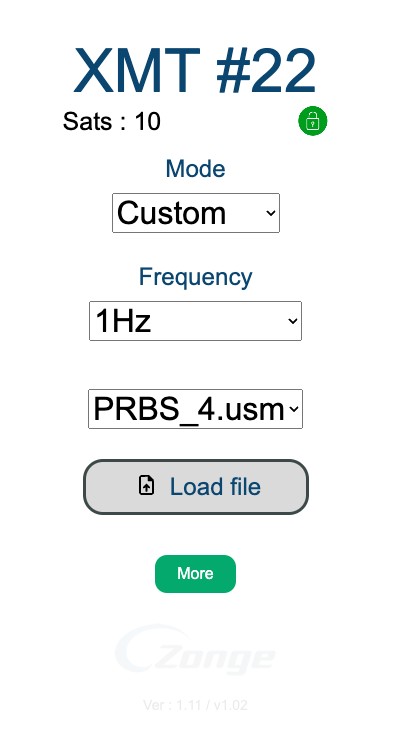

Using the WEB Interface
The XMT-R also supports control through a web interface when Wi-Fi is enabled. Upon activation, an IP address is provided, allowing users to access the transmitter remotely.
2.1 Main Page Overview
The main page of the web interface displays the same core information as the device screen:
Number of Satellites: Indicates GPS connection status.
Sync Status: Displays “Searching for Sync” or “Locked.”
XMT ID: Identifies the unique transmitter ID.
Mode Selection Dropdown: Allows the user to select the desired mode.
Frequency Selection Dropdown: Allows the user to select the frequency based on the current mode.

Additionally, a More button is available that:
Displays detailed GPS Information.
Provides access to switch between Advanced and Basic Mode settings.
2.2 Mode and Frequency Adjustment
Users can interact with dropdown menus to select the desired Mode and Frequency based on their current mode. This selection is similar to using the hardware buttons but with the convenience of point-and-click interaction.
In Custom Mode, users also have the ability to: (This option is only available through the web app.)
Upload User Profiles: These profiles are stored within the transmitter, allowing the user to switch easily between different pre-configured settings.
For more details, see the binary_file_creation_guide.
2.3 Admin Page
The web interface includes an Admin Page that offers additional settings and firmware management options:
Firmware/Spiff Updates: Users can upload new firmware versions or Spiff files.
FPGA Updates: Update the internal FPGA of the transmitter.
Wi-Fi Settings: Set the Wi-Fi mode to either Hotspot mode or connect to a Local Network by providing the network credentials.